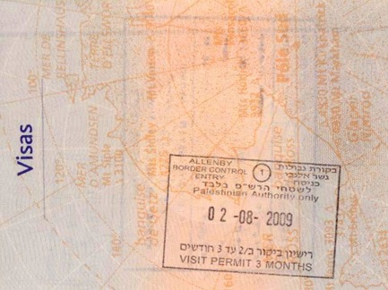

2009-08-18 08:00
Recently Israel created a visa system for American visitors which restricts us to either “European” or “Palestinian” areas or locks us out of the West Bank altogether - another reminder of the similarities Israel and the old South African Apartheid regime share. I sent our State Department a letter of complaint, and I hope others do as well: > Department of State
> U.S. Consulate General, Consular Section
> United States Department of State
> 27 Nablus Road, 94190 Jerusalem > > Dear Mr/Ms Consul: > >
Earlier this year I traveled to Israel and the West Bank with a peace group, to see for myself the “reality on the ground” for both Israelis and Palestinians. It was an important visit for me, and of the kind I would like to see possible for other Americans in the future. > > Now, Israel’s new travel restrictions on American citizens will make these important cultural contacts difficult or impossible. > > https://jru.usconsulate.gov/border-crossings.html > > Israel’s new restrictions on American citizens traveling to and from the West Bank and Gaza are a violation of the Oslo Accords (Article IX, Section 1.e): > > http://www.jewishvirtuallibrary.org/jsource/Peace/iaannex1.html > > Israel’s limitations of travel on American citizens to a country it has dubious rights to control are an unacceptable limitation by a foreign power of my rights as an American. > > 
One group of Americans, Palestinian-Americans, is unduly harmed by these new restrictions. If they are lucky enough to obtain a “Palestinan-only” visa, they lose the right to visit the rest of Israel. This is clearly discriminatory and it would be my hope that the U.S. government would fight this for American citizens’ interests. > > Placing such restrictions on Americans would be analogous to permitting Israelis to visit only several American states – and then only after basing these visas on religious affiliation, thereby discriminating against any visitor. > > I urge you to strongly register American objections to these new visas and to ensure continued, unfettered access to all of Palestine/Israel by American citizens. > > If Israel is unwilling to comply, I would urge you to place meaningful restrictions on Israeli citizens’ travel to the U.S., including student and special religious visas. > > Regards, > > David Ehrens